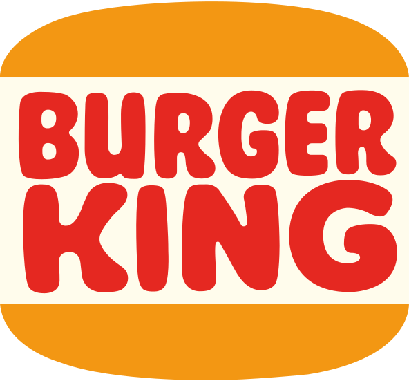
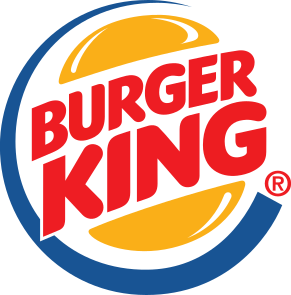
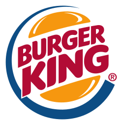

버거킹 Burger King
버거킹(Burger King)은 1953년 미국 플로리다주 잭슨빌에서 인스타-버거킹으로 출발해 1954년 마이애미에서 본격 운영을 시작한 패스트푸드 체인이다. 시그니처 메뉴 와퍼는 1957년에 만들어졌고, 현재 모회사는 레스토랑 브랜즈 인터내셔널이다.
최종 업데이트
버거킹은 어떤 브랜드인가
버거킹(Burger King)은 1953년 7월 미국 플로리다주 잭슨빌에서 인스타-버거킹(Insta-Burger King)으로 출발했으며, 1954년 12월 마이애미에서 제임스 맥라모어와 데이비드 에저턴이 프랜차이즈를 열어 운영을 시작했고 1959년 전국 영업권을 인수해 버거킹으로 상호를 확립했다. 시그니처 메뉴 와퍼(Whopper)는 1957년에 만들어졌으며, 현재 모회사는 2014년부터 레스토랑 브랜즈 인터내셔널(RBI)이다.
버거킹은 어떻게 봐야 할까
버거킹의 핵심 차별점은 패티를 철판이 아닌 불에 직접 굽는 직화 조리 방식이다. 경쟁사 맥도날드가 그리들에서 패티를 굽는 것과 달리, 버거킹은 불맛이라 불리는 향과 풍미를 무기로 삼아 대표 메뉴 와퍼를 전면에 내세운다.
미국에서도 와퍼를 매장 유입의 핵심 동력으로 삼는 회생 전략을 펴며 직접 비교 광고로 맥도날드 버거의 크기를 겨냥해 왔다. 한국에서는 2024년 직화 정체성을 강화한 뉴 와퍼를 내놓아 출시 8개월 만에 500만 개 이상 팔렸고, 2025년 4분기 구매금액 점유율에서 롯데리아를 제치고 2위에 올랐다.
운영사 비케이알은 2025년 매출 8922억 원, 영업이익 429억 원을 기록했으며 최대 1조 원 규모로 매각이 추진되고 있다.
버거킹은 어떻게 시작되고 성장했나
제임스 맥라모어와 데이비드 에드거턴이 1954년 미국 마이애미에서 시작한 퀵 서비스 레스토랑으로 햄버거, 치킨, 프렌치 프라이, 탄산음료, 밀크셰이크, 샐러드, 디저트 등을 제조 · 판매함.
버거킹의 브랜드 아이덴티티는 무엇인가
버거킹의 시각 정체성을 상징하는 '번(bun)' 로고는 1969년 두 개의 빵 사이에 굵은 워드마크를 끼워 넣은 형태로 정립되었고, 1994년 빵 색을 보다 선명한 오렌지로 정돈했으며, 1999년에는 빵을 감싸는 파란색 초승달 스우시가 추가되었다. 2021년 버거킹은 디자인 에이전시 존스 놀스 리치(Jones Knowles Ritchie)와 함께 20여 년 만의 전면 리브랜딩을 단행해, 1999년 로고의 파란색을 완전히 제거하고 1970~90년대 스타일에 맞춘 평면·복고풍 번 로고로 회귀했다.
색상은 음식에서 도출한 따뜻한 팔레트를 채택해 머스터드에서 오렌지에 이르는 톤과 짙은 갈색을 기반으로 직화 구이 정체성을 환기했으며, 음식의 둥근 형태에서 영감을 받은 전용 서체 'Flame Sans'가 도입되었다.
버거킹의 대표 제품과 서비스는 무엇인가
햄버거, 감자튀김, 청량 음료, 핫도그, 후식, 와퍼, 빅 킹, BK Chicken Fries
버거킹은 지금 어떤 상태인가
버거킹은 2021년 도입한 평면형 복고 번 로고와 Flame Sans 서체 기반 시각 정체성을 현재까지 사용하며, 레스토랑 브랜즈 인터내셔널 산하의 글로벌 패스트푸드 체인으로 운영된다.
버거킹 연혁 — 주요 사건은 언제였나
버거킹 로고는 어떻게 변해왔나

BI/CI 아카이브보관 이미지 1
BI/CI 아카이브 2보관 이미지 2
BI/CI 아카이브 3보관 이미지 3자주 묻는 질문
버거킹는 언제 설립되었나요?
버거킹는 1954년 설립되었습니다.
버거킹는 어떤 산업의 브랜드인가요?
버거킹는 식음료 분야의 브랜드입니다.
버거킹의 브랜드 아이덴티티는 무엇인가요?
버거킹의 시각 정체성을 상징하는 '번(bun)' 로고는 1969년 두 개의 빵 사이에 굵은 워드마크를 끼워 넣은 형태로 정립되었고, 1994년 빵 색을 보다
버거킹의 대표 제품은 무엇인가요?
햄버거, 감자튀김, 청량 음료, 핫도그, 후식, 와퍼, 빅 킹, BK Chicken Fries
버거킹는 어느 기업이 소유하고 있나요?
버거킹은 2021년 도입한 평면형 복고 번 로고와 Flame Sans 서체 기반 시각 정체성을 현재까지 사용하며, 레스토랑 브랜즈 인터내셔널 산하의 글로벌 패스트푸드 체인으로 운영된다.
출처와 검증
브랜드명은 한글과 원어를 함께 표기하되 데이터에 없는 표기는 만들지 않습니다. 기원 국가·설립연도는 검수된 정의문에서 확인된 값을 우선하고, 없을 때만 공식 웹사이트 URL이 일치하는 위키데이터 개체의 값을 씁니다.